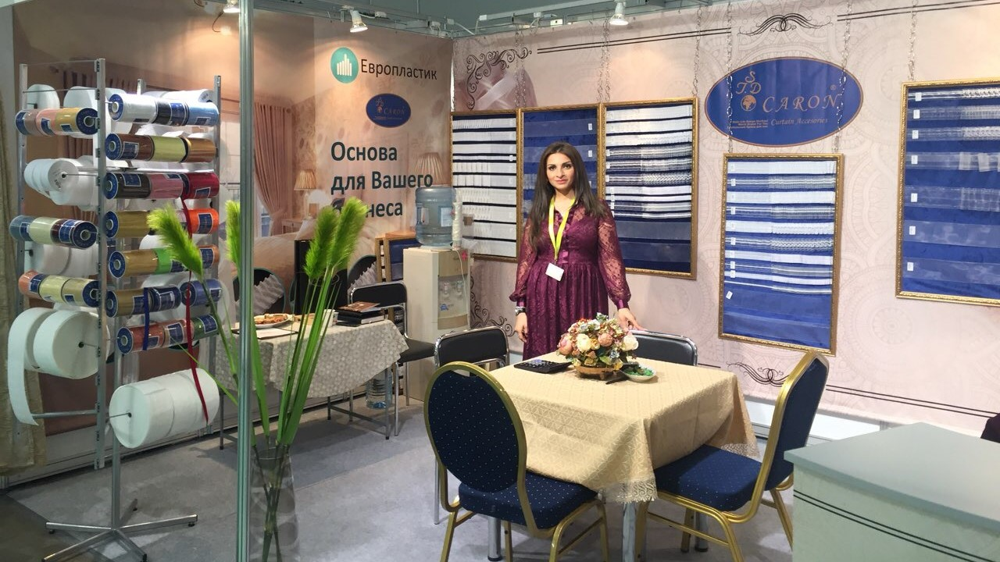
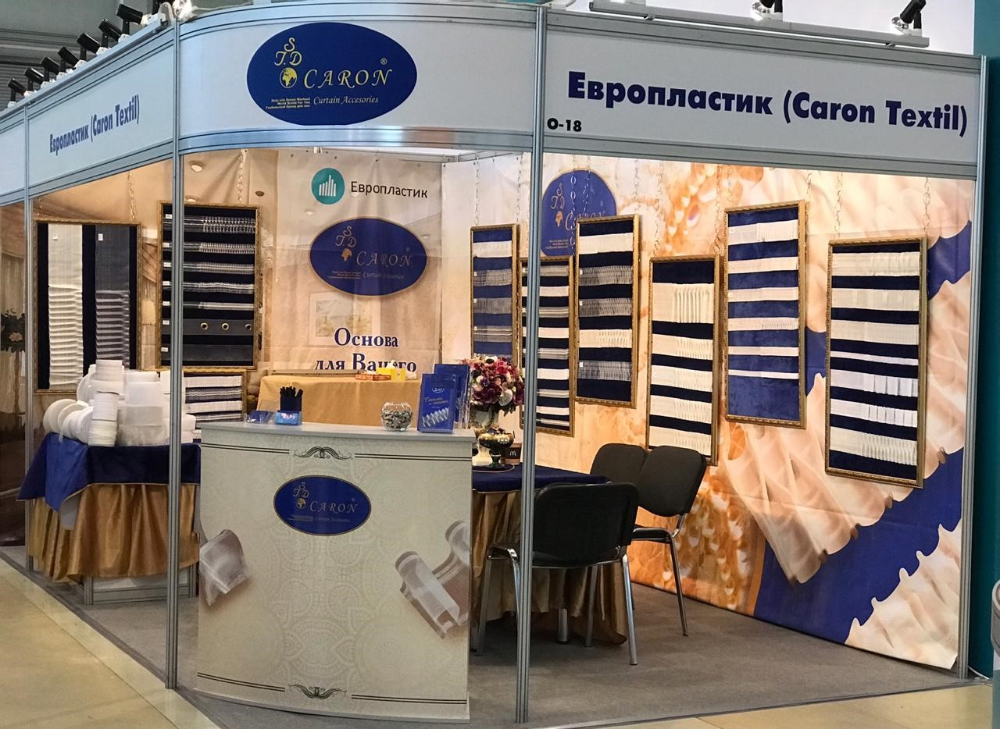
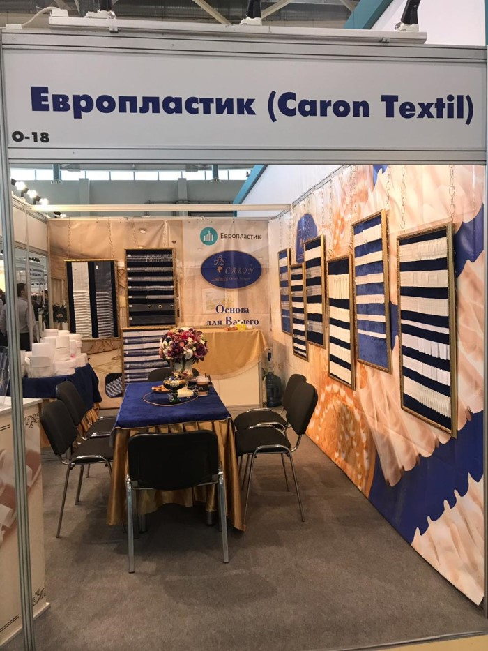

О компании
Надежный партнер уже более 15 лет!
История «Европластик» ООО начиналась тихо и скромно, на месте бывшей швейной фабрики в 2002 году. В названии компании слова «ЕВРО» присутствует неслучайно — мы ориентируемся на европейские стандарты в своем производстве и как следствие производстве качественных товаров. Мы ценим доверие своих покупателей, постоянно повышаем качество и совершенствуем технические возможности с учетом современных стандартов. За долгие годы работы мы зарекомендовали себя как надежный партнер и лучший поставщик запатентованной продукции. Наша компания предлагает своим покупателям продукцию высокого качества, сотрудники устанавливают индивидуальный подход к своему заказчику и оперативно решают любые вопросы по оптовой поставке нашей продукции. Мы предлагаем покупателям шторную ленту от производителя по самым приемлемым ценам. Это позволяет нашим партнерам успешно вести свой бизнес на территории России.
На сегодняшний день компания ООО «Европластик» является производителем шторной ленты марки Caron Textil уже более 15 лет. Компания «Европластик» — надежный партнер крупных и известных компаний на территории РФ. Компания сумела завоевать безупречную репутацию. В работе с клиентами и в построении производственных процессов компанию отличает высокий профессионализм.
Широкий ассортимент и высокое качество шторной ленты — главные приоритеты компании.
Компания «Европластик» является единственным производителем шторной ленты на территории РФ. Продукция компании полностью соответствует европейским стандартам: более 50 новых моделей шторной ленты появились в этом сезоне.
 